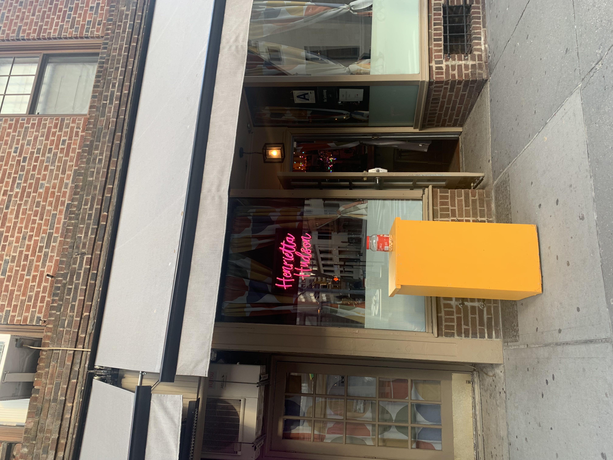

Lesbian bars across the country have increased for the first time in decades from 15 to 32 in the past few years because those businesses became more inclusive to people outside of the LGBTQ+ community.
According to Greggor Mattson, a sociology professor at Oberlin College and researcher of gender and sexuality studies, lesbian-owned bars have innovated in different ways to attract more customers.
“Now lesbian bars are open to everybody [and not just lgbtq people]. They [bar owners] have solved this puzzle of ‘how do you serve one community while being open to everybody?’ Mattson said.
Since lesbian bars have been trying to attract a wider audience, they go by different names such as “queer bars” and “women’s bars” rather than just “lesbian bars,” Mattson said. This increases the number of bars that can be identified as lesbian but also increases their audience hence the revenue as well as the number of venues where women and non-binary people feel comfortable.
Lesbian-owned businesses, particularly bars, were one of the hardest-hit businesses during the pandemic. Since they already serve a niche market, it was even more difficult for them to have the funds to pay their employees. However, “The Lesbian Bar Project,” a documentary that examines the remaining lesbian bars in the country, raised nearly $120,000 during the pandemic to help the bar owners keep their businesses running. In addition, the activism that came with the documentary encouraged more queer women to launch their bars.

Henrietta Hudson is one of four lesbian bars in New York alongside Ginger’s and Cubbyhole.
“A lot of us grew up in environments where we didn’t even have anything close to what Hens or Cubby is or even some other queer spaces so the fact that there is only a few of them left in the country makes me cherish those spaces even more,” Nina Dvali, a Henrietta Hudson patreon.
“I think what some people don’t understand and I mean… if you haven’t been through certain struggles, I can see why that is, but the point is those bars are not just bars where they serve drinks. It takes so much dedication on the owners’ part to run those spaces because of anti-lgbtq legislation as well as disproportionate ways in which COVID-19 affected queer business owners,” Anne Ortiz, a Cubbyhole patreon.
“I think lesbian bars have seen a lot in terms of queer first dates, coming out stories, and I really do appreciate how staff and patrons try to take care of these space as much as they can,” Ortiz said.
In the 1980s, there were more than 200 lesbian bars in the country. Due to the AIDS crisis, hence a steep decline in the 90s, the number dropped to around 20 in 2020. However, with the 32 lesbian bars post-COVID, those spaces are becoming a bigger market.
Mattson said that when it comes to the initial decline of lesbian bars that happened in the '90s happened because lesbian bars shifted toward including gay men, as lesbians and gay men were working more closely during the AIDS crisis.
“[In the 90s] there's a common pattern where a bar that's a lesbian bar gets adopted by gay men as well and then lesbians who wanted a women's only space will abandon the space and it may well become mostly a gay men's bar,” Mattson said.
Despite the growing number of lesbian bars since 2023, those bars still face many challenges as businesses especially compared to gay bars that are larger in number. According to the most recent data, there are over 800 gay bars in the country that cater to cis-gendered men.
According to him, the other challenge for lesbian bars to stay in business is the growing LGBTQ acceptance, meaning that queer people feel comfortable socializing outside of queer-designated spaces.
“Gay bars have lost their monopoly on queer people's leisure dollars.”
Mattson added that when it comes to the initial decline of lesbian bars that happened in the 90s, said factors cannot be blamed for that decline. Rather, lesbian bars shifted toward including gay men as lesbians and gay men were working more closely during the AIDS crisis.
“[In the 90s] there's a common pattern where a bar that's a lesbian bar gets adopted by gay men as well and then lesbians who wanted a women's only space will abandon the space and it may well become mostly a gay men's bar,” Mattson said.
Mattson added that the 70s and 80s were “the lesbian golden age.” This was a time when lesbian separatism—the idea of creating a women’s world within the man’s was the cornerstone of the lesbian philosophy. However, overtime this philosophy declined, and with it went a lot of women-only spaces.
Another reason why lesbian bars had to become more inclusive earlier than gay men’s bars is that they had to deal much earlier with the question of trans women and whether trans men were welcome in women’s spaces.
The Cybbyhole Bar in New York City. Credits: Jakayla Toney
In response to the future of lesbian bars, Mattson said that the inclusivity that lesbian bars provide sets an example for all the other LGBTQ+ bars.
“One thing that surprised me in doing the research was how welcoming lesbian bars were to cis men” Mattson said.
“Lesbian bars are leading the way for all gay bars as a model for how to welcome straight people and everybody and still maintain a mission that supports one part of the community.”
Nina Dvali, a patron at Henrietta Hudson, prefers the clientele to be more like her.
“These are sapphic spaces, and they are for people who want to get a drink and have a sense of community and feel like they are a part of something and it feels that having non-queer women here is like having those spaces invaded,” Dvali said.
Dvali chooses lesbian bars instead of regular bars for a sense of community.
“I think for a lot of us choosing where we spend our money is sort of intentional so by spending my dollars here, it feels like I am actually doing something to support those businesses,” she said.
Leo Ramirez, a patron at Cubbyhole, feels indifferent to the fact that lesbian bars cater to all sorts of people.
“I think it has positive effects like the fact that lesbians can just invite their friends and hang out in a safe space but at the same time, there have been instances where people don’t respect the space the way they should,” Ramirez said.
She added that she chooses to spend more time at lesbian bars because those spaces are meant for her.
“I feel more welcomed in a lesbian bar and I know I am the target demographic. And just to reiterate, support, support, support, queer businesses,” she said.